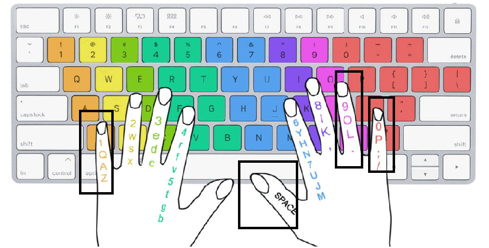

Mục lục
1. Mình là ai ?
Mình là Phạm Gia Huy. Mình sinh năm 2k2. Mình là một học sinh cực kì giỏi và đầy nghị
lực, từ hồi còn bé mình đã học giáo án sơ cấp mầm, chồi, lá. Lãnh rất
nhiều giấy khen "CHÁU NGOAN BÁC HỒ" và nhiều "PHIẾU BÉ NGOAN" khác.

Đến giai đoạn tiếp theo mình học chương trình đào tạo nâng cao từ lớp 1 đến lớp 12
và mình tốt nghiệp THPT Quốc Gia với tấm bằng tốt nghiệp loại ĐẠT.
Điều mà tưởng chừng như rất khó nhưng mình vẫn làm được.
Sau khi tốt nghiệp mình tưởng cuộc sống mình sẽ có thêm nhiều điều thú vị mới ở đất Sài Thành nhưng
không! Cột sống nó gửi mình 1 cái tát vào mặt. Nào là thoát vị đĩa đệm, đau thắt lưng, đau mỏi vai
gáy, bạn biết do đâu không ?
Mình đã chọn làm coder, hiện tại mình đang
học theo hướng Front End Developer của ngành CNTT. Trước đó mình học ngành
Điện Tử Viễn Thông hay Điện Tử Truyền Thông (Electronic Telecommunication) cũng là nó luôn, năm nhất mình tưởng 2 cái này là 2 ngành khác nhau cơ :)). Có thể nói là mình trái ngành,
đến tận đầu năm 3 mới xác định được hướng đi rõ ràng của bản thân sau này. Hiện tại ngay thời điểm
mình viết blog này là ngày 6/12/2022, mình học web cũng mới được 4 tháng thôi. Thật sự thì việc viết
Blog rất dễ dàng, chỉ cần thạo cơ bản HTML và CSS là làm được rồi - không động tí gì về ngôn ngữ lập
trình luôn.
Cái web này mình thức từ 12h khuya đến 5h sáng để làm. Do không có ý tưởng với ko biết đặt tên web là gì ? Logo như thế nào ? Nên mình tốn kha khá thời gian để hoàn thành phần cơ bản trước.
2. Tại sao mình viết Blog này ?
Như đã nói ở trên mình viết blog này để lưu trữ những kiến thức mà mình lượm nhặt đâu đó trên mạng. Và cố giải thích ngắn gọn lại chúng. Một trong những cách học tốt nhất là REFLECT lại kiến thức đã học.
Và một phần là vì đam mê thích kể chuyện. Ai mà thân với mình là mình sẽ nói tới sáng luôn ý. Còn bạn thì sao ? Bạn thích lắng nghe người khác hay là một người thích kể chuyện ?
3. Viết Blog này có kiếm được tiền hong ?
Chắc nãy giờ các bạn cũng để ý cái đường dẫn của web đúng ko ? Nó hơi lạ. Tại sao lại có cái đuôi .vercel.app gì đó.

Thì mình sẽ giải thích ngắn gọn xúc tích cho các bạn dễ hiểu. Cái này nó là 1 trang web nó deploy ( triển khai ) web cho mình ( dựa vào code mình đã viết ). Và nó hoàn toàn FREE. Sinh viên nghèo như tôi lấy đâu ra tiền mà mua domain ( tên miền ) mà dùng :(. Cho nên cái này ko kiếm được đồng nào trên đây đâu nhé.
4. Tốc độ gõ phím của mình
Hậu quả của việc toxic quá nhiều trong game. Chả cần luyện tập gì mấy mà nó tự lên theo thời gian :)). Link test tốc độ gõ : https://10fastfingers.com/typing-test/vietnamese
Fact 1: Mình tiếp xúc với máy tính từ năm lớp 6 đến giờ là năm 3 ( 8-9 năm rồi ), cũng do may mắn nên được toxic hơi nhiều trong mỗi trận LOL. Nên năng suất gõ phím mình được cải thiện khá nhanh.
Fact 2: Mình gõ chỉ có 6 ngón ! Dưới đây là các ngón tay mình không dùng trong lúc gõ:
Do tay phải không dùng đến tận 3 ngón nên áp lực dồn lên ngón giữa hơi nặng nha :))).
Đối với bạn nào không tin mình có thể tham khảo bài viết này:
[Nghiên
cứu] Sử dụng 10 ngón không giúp bạn gõ phím nhanh hơn
Thật sự nếu bạn gõ 6-8 ngón mà nếu chúng được sử dụng linh hoạt thì bạn cũng có thể gõ rất nhanh. Đừng dùng 2 ngón nhất dương chỉ là được rồi :)))).

Hồi đó lớp 6-7 mình gõ kiểu này chậm quá. Nên chơi Game Mario lúc học tin học ý. Nhờ đó mà gõ được 6 ngón, học xong ra net làm vài ván game, toxic đến tận 9-10h đêm mới về :)).